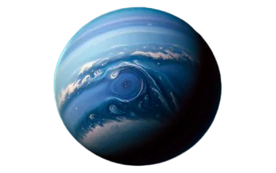

NEPTUNE
Neptune is the eighth and farthest known planet from the Sun in our solar system. It’s a dark, cold, and extremely windy world. Neptune is an ice giant like Uranus and is known for its deep blue color caused by methane in its atmosphere. It has the strongest winds of any planet.
Source: Wikipedia 🔗